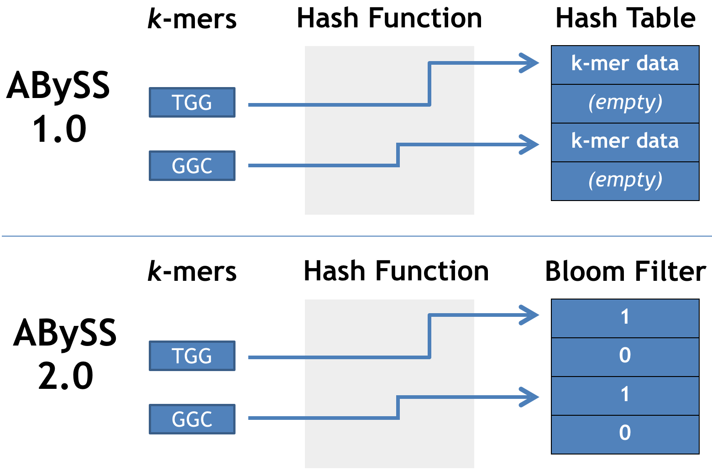
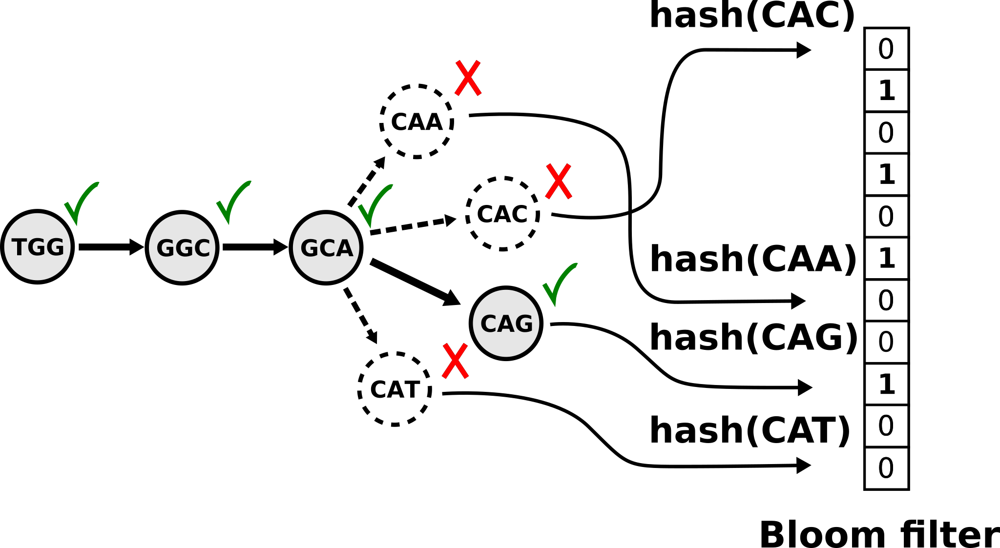
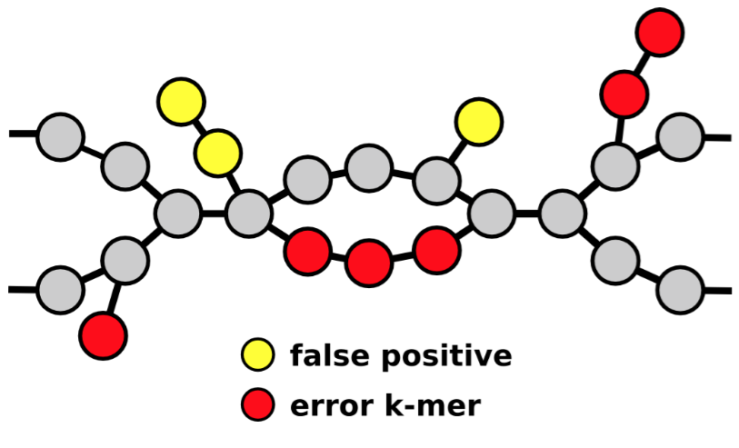
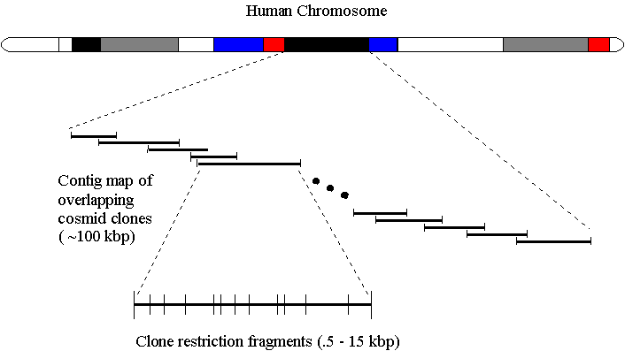

A memory-efficient data structure
reduces memory usage
Fitting entire graph in a single machine
eliminates network communication
Using shared memory (OpenMP)
eliminates message passing (MPI)
ABySS 2.0 reduces the memory
usage of ABySS by ten fold.
Memory efficient de Bruijn graph using a Bloom filter Memory usage is independent of k
Navigating a Bloom filter de Bruijn graph
Sequencing errors and Bloom filter false positives
Spruce genome assemblies
ABySS
1.3.5
2.0.0
Spruce species
Interior
Sitka
Machines
115
1
RAM (GB)
4,300
500
CPU cores
1,380
64
CPU time*
6.0 years
3.2 years
* Time of unitig assembly without scaffolding
Human: 42 Mbp NG50 with BioNano optical mapping
ABySS 2.0 Conclusions
ABySS 2.0 reduces memory usage by 10 fold
from 418 GB to 34 GB for human
from 4,300 GB to 500 GB for spruce
High-throughput short-read sequencing
combined with large molecule scaffolding
such as linked reads and optical mapping
permits cost effective assembly of large genomes
Tigmint: correcting assembly errors using linked reads from large molecules SD Jackman, L Coombe, J Chu, RL Warren, BP Vandervalk, … BMC Bioinformatics 2018
ABySS 2.0: resource-efficient assembly of large genomes using a Bloom filter SD Jackman*, BP Vandervalk*, H Mohamadi, J Chu, S Yeo, SA Hammond, … Genome Research 2017
Organellar genomes of white spruce (Picea glauca): assembly and annotation SD Jackman, RL Warren, EA Gibb, BP Vandervalk, H Mohamadi, J Chu, … Genome Biology and Evolution 2015
UniqTag: content-derived unique and stable identifiers for gene annotation SD Jackman, J Bohlmann, I Birol PLOS ONE 2015
Selected Publications
Assembly of the complete Sitka spruce chloroplast… L Coombe, RL Warren, SD Jackman, C Yang, BP Vandervalk, …, I Birol PloS one 2016
Spaced seed data structures for de novo assembly
I Birol, J Chu, H Mohamadi, SD Jackman, K Raghavan, …, RL Warren International journal of genomics 2015
Konnector v2.0: pseudo-long reads from PE sequencing
BP Vandervalk, C Yang, Z Xue, K Raghavan, J Chu, H Mohamadi, SD Jackman, …, I Birol BMC medical genomics 2015
Sealer: a scalable gap-closing application…
D Paulino, RL Warren, BP Vandervalk, A Raymond, SD Jackman, I Birol BMC Bioinformatics 2015
On the representation of de Bruijn graphs
R Chikhi, A Limasset, SD Jackman, JT Simpson, P Medvedev Journal of Computational Biology 2015
Improved white spruce (Picea glauca) genome…
RL Warren, CI Keeling, MMS Yuen, A Raymond, GA Taylor, …, J Bohlmann The Plant Journal 2015
Assembling the 20Gb white spruce genome…
I Birol, A Raymond, SD Jackman, S Pleasance, R Coope, …, SJM Jones Bioinformatics 2013
Solid reads are extended using the Bloom filter de Bruijn graph to assemble unitigsABySS 2.0 reduces memory usage by 10 fold vs ABySS 1.0 for human genome assembly (GIAB HG004 NA24143)
Group reads within d bp of each other (d = 50 kbp)
Infer start and end coordinates of molecules
Construct an interval tree of the molecules
Each w bp region ought to be spanned by n molecules
(w = 1 kbp, n = 20)
Identify regions with fewer than n spanning molecules
Cut sequences at regions with insufficient coverage
Note: Supernova used only linked reads, others PE+MP+LR.
Tigmint Time and Memory
bwa mem Map reads to assembly
5½ hours, 17 GB RAM, 48 threads tigmint-molecule Group reads into molecules
3¼ hours, 0.08 GB RAM, 1 thread tigmint-cut Identify misassemblies and cut sequences
7 minutes, 3.3 GB RAM, 48 threads
Western Redcedar Assembly
12.5 Gbp genome size estimated by flow cytometry
(Hizume et al. 2001 doi.org/d89svf)
9.8 Gbp genome size estimated by GenomeScope
8.0 Gbp assembled in scaffolds 1 kbp or larger
Western Redcedar BUSCO
60.4% of core single-copy genes present (BUSCO)
53.9% complete
6.5% fragmented
39.6% missing
Physlr
Physical Maps of Linked Reads
Traditional physical map of cosmidsPhyslr map of a plastid genome (120 kbp)Physlr map of fruit fly chr4 (1.35 Mbp)Physlr map of fruit fly (7 chromosomes, 138 Mbp)Physlr map of zebrafish (25 chromosomes, 1.35 Gbp)